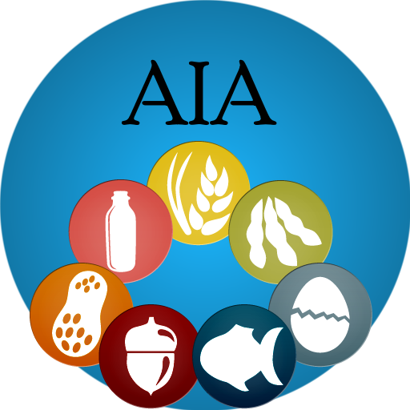

Am I Allergic?Version 1.0Application by Tyler Ford, Rob Samalonis, and Vladamir Carrero.
GitHub Project Page
Change log
Send feedback
License
This app is a mash-up of several open source projects:
The source code for this app is available at https://github.com/tuf07378/ingredscan.